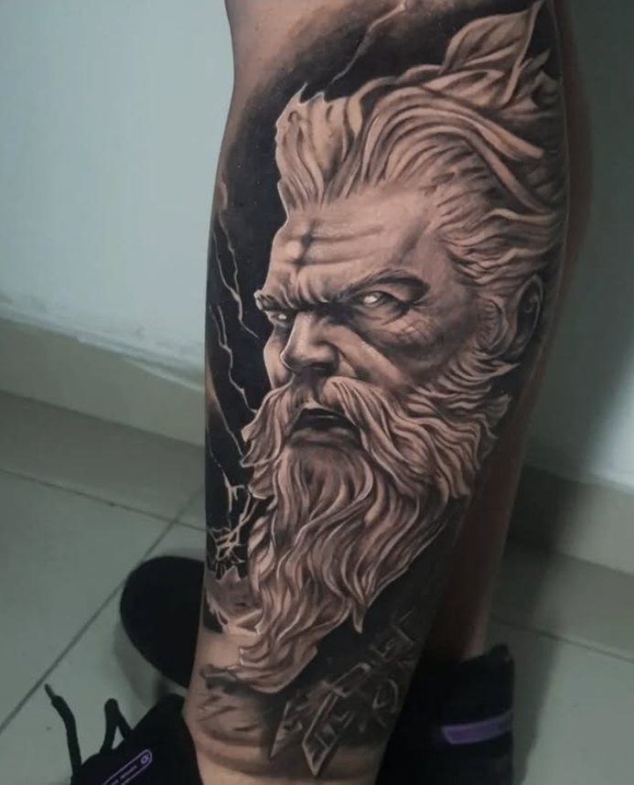
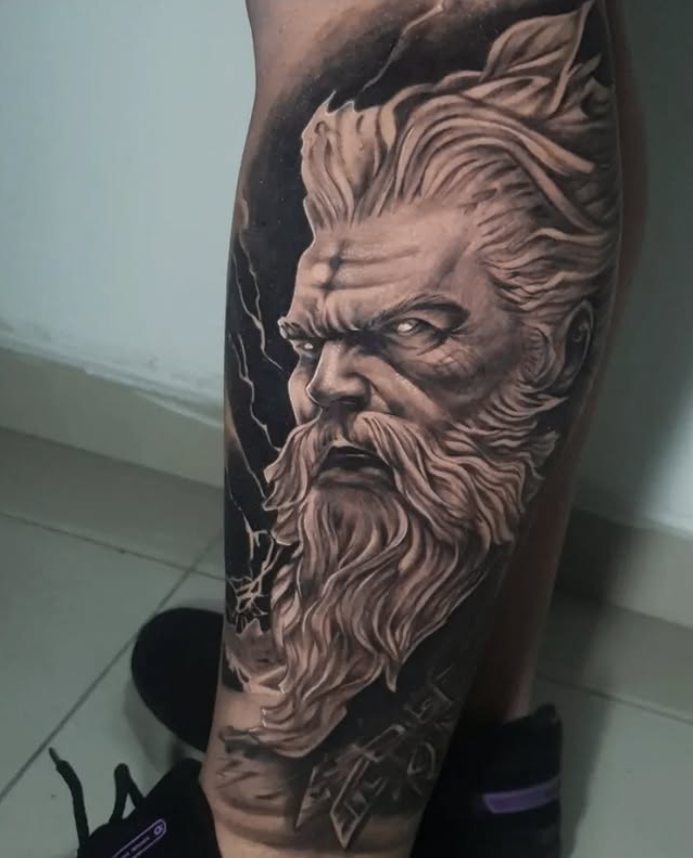

Conheça meu Trabalho e minha História
Recentemente abri meu próprio estúdio de tatuagem, um espaço onde posso realizar meu verdadeiro propósito: marcar sentimentos, histórias e paixões em forma de arte. Cada pessoa que passa pela minha cadeira ganha mais que uma tattoo – vive um dia especial, um escape da rotina e carrega uma parte única de si.
Para mim, tatuar não é sobre fama ou status. Meu trabalho é para as pessoas. É sobre entregar o meu melhor, sem diminuir ninguém ou viver de aparências. Não preciso de máscaras sociais – acredito na autenticidade, no talento, na dedicação e, acima de tudo, na minha Fé.
Passei por fases difíceis, injustiças, traições e noites escuras, mas encontrei força em Deus. Ele me guiou pelo deserto e me mostrou Sua infinita misericórdia. Hoje, cada traço que faço é também gratidão por essa vitória.
Meu foco continua o mesmo: viver daquilo que amo, ajudar minha família e marcar a vida das pessoas de forma única. Aqui e agora, começa uma nova história.
Agende sua Tatuagem 

Confiança e experiências reais
Tattoo braba demais mano, sessão foi top, só progresso sempre 🙌🔥
mais uma vez, meus parabéns @yago.miranda99 , que Deus abençoe essa sua nova jornada… você é foda!👏🏼🔥
Tu é brabo 🔥🔥🔥
Para agendar, entre em contato pelo WhatsApp ou pelo formulário no final do site, informando sua ideia e disponibilidade.
Realizo todos os estilos de tatuagem. Gosto de conversar com cada cliente para entender a ideia, sentimento ou história que deseja expressar, e juntos escolhermos o melhor estilo para sua tattoo.
Manter a região limpa, evitar sol e piscina, hidratar com pomada recomendada e seguir as instruções dadas no estúdio.
Sim, no meu estúdio sigo todas as normas de higiene e uso materiais esterilizados e descartáveis, garantindo segurança total aos clientes.
A idade mínima é 18 anos. Menores só podem com autorização e presença do responsável legal, conforme lei vigente.
Sim, é permitido levar um acompanhante, mas recomendo que seja apenas uma pessoa para manter o ambiente calmo e focado na sessão.
O tempo médio de cicatrização é de 2 a 4 semanas, mas o cuidado deve continuar mesmo após esse período para manter os traços vivos.
É recomendado evitar exercícios intensos nos primeiros dias, principalmente se a tatuagem for em áreas que podem sofrer atrito ou suor excessivo.
Sim, realizo retoques se necessário. Em tattoos recentes, o retoque pode estar incluso dependendo da avaliação e cuidados realizados pelo cliente.
Sim, realizo reformas de tatuagens antigas. Antes, gosto de analisar a tattoo pessoalmente para entender como está a pele, os tons e o desenho original, e então planejar a melhor forma de revitalizar ou cobrir, sempre respeitando o desejo e a história do cliente.
O ideal é pensar no significado que deseja carregar. Traga referências e ideias, e juntos criaremos um desenho único, personalizado para você.
Procuro sempre manter um ambiente leve, respeitoso e descontraído. Aqui valorizo boas conversas, risadas e música, para que seja uma experiência única e tranquila para você. Vamos colaborar juntos para que seja um dia especial, com muito respeito e energia positiva.
Agende sua Tattoo, tire dúvidas ou faça seu ORÇAMENTO
Endereço: Av. Emílio Bôsco, 704 - Parque Yolanda (Nova Veneza) - sala 4
 WhatsApp: (19) 98849-6321
WhatsApp: (19) 98849-6321
Email: contato@email.com